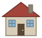

Mine cross-section
Side view. Movement is exaggerated so it shows: tilt x2, sinking 1.2 px per mm.
Zone 10.0° tilt, 0 mm down
Zone 20.0° tilt, 0 mm down

Zone 30.0° tilt, 0 mm down
Controls
Vibration is the extra vibration on top of a quiet node, in the model's g scale. Sliders take over from a running preset.
Zone map
Top viewZone 1
Zone 2
Zone 3
- Normal
- Anomaly (vibration only or possible)
- High risk, alert confirmed